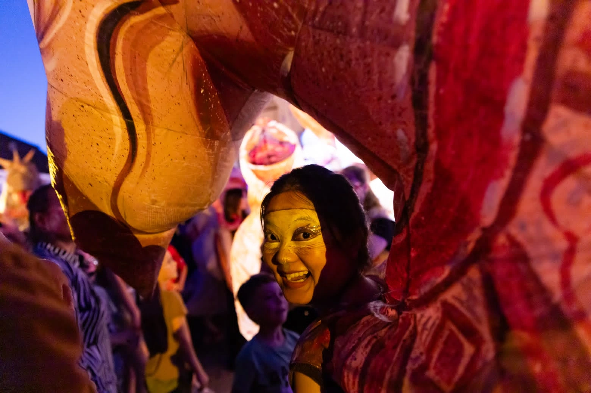

The Mother Project
In the Cripta di Santa Restituta, I wrote letters to my younger selves—moving backwards from 29, to 28, to 27—while a documentary of a journey with my mother played on a loop behind me. I was finally following the only clear advice she had given me: write a letter to yourself every year.
Developed during The Mother Project residency, this performance revisits the small moments that shaped my life and the distance between our experiences: a daughter who left home, and a mother whose life centres on her family. Writing became a way to recognise her beyond the role of mother and build a deeper connection with her.

Being Watched
Cameras protect public safety, but they also exert an authority that extends into our private lives. In this installation, red threads spread through a mirrored room to make that invisible reach tangible. Visitors are invited to cut the threads—a gesture of questioning and resisting the intrusion of surveillance into personal space.
I created Being Watched during a collaborative workshop with Theater of Sardinia and Rafat Asad. The work brings surveillance, reflection and the body into the same space, asking where protection ends and control begins.

Where Do We Come From, What Are We, Where Are We Going 2.0
I contributed to the scenic setup of the Italian version of Wang Chong’s participatory theatre work, presented at Nest Zerosei, Campus Tiscali, during Sardegna Teatro’s Prototipi 2024 on 17–20 and 23–27 October.
Inside a nursery for children aged 0–3, we arranged playful routes that invited audiences to move through and take part in the performance. Much of the nursery’s furniture, objects and decoration remained in place, while children joined the preparation by making drawings, decorations and props. The existing everyday environment became part of an immersive theatrical world.

Sibiu · Encounters on stage
At the Sibiu International Theatre Festival, I supported visiting companies, festival logistics and intercultural welcome as a volunteer. I also took part in The Great Expedition, a street performance by the French company Plasticiens Volants, encountering theatre as a shared experience in public space.
This archive brings together my experiences at the festival in 2024 and 2026, including performance photographs and a volunteer portrait. My 2026 experience was featured in Tribuna and in an interview with Romanian national radio, opening another way to share the encounters behind the festival.

Stand-up in Chongqing
In 2021, I performed stand-up at Suodao Comedy (索道喜剧) in Chongqing. This part of my performance practice placed me in direct conversation with a live audience through spoken storytelling and humour.
The photographs document different moments on stage, along with a shared moment with fellow performers and the audience. They form a record of my experience as a stand-up performer within Chongqing’s local comedy scene.

Mirror Light Theatre
I founded and directed Mirror Light Theatre at the High School Affiliated to Southwest University, creating a space for students to write, rehearse and perform together. Over seven years, I directed seven original productions, including The Red Scarf, The Most Individual Person and Blue Is a Distant Colour.
Working from school life and students’ own questions, the troupe connected theatre-making with self-expression, self-acceptance and collaboration. Alongside stage productions, we made short films set on campus and encouraged students to develop their own original screen projects.

Wumeng Xu
I work across theatre, performance and moving images. My practice explores memory, personal narrative and the possibilities of creating together.
wumengxu76540@gmail.com ↗